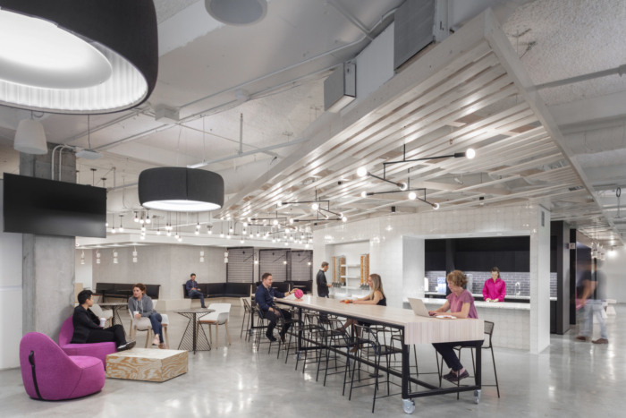
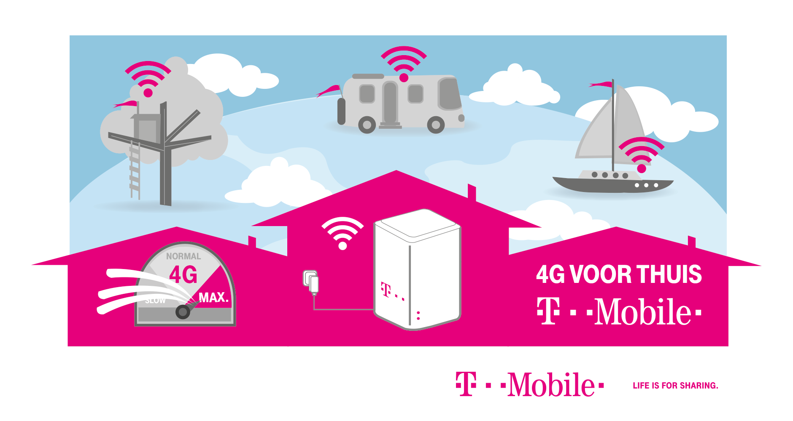
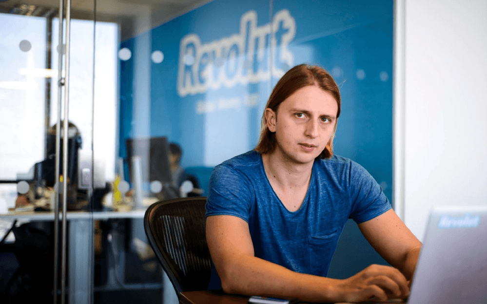
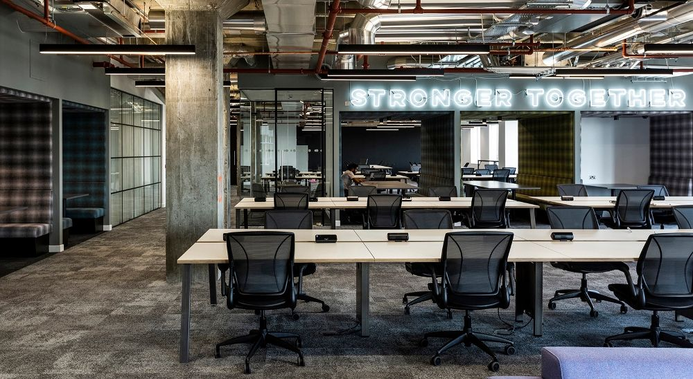
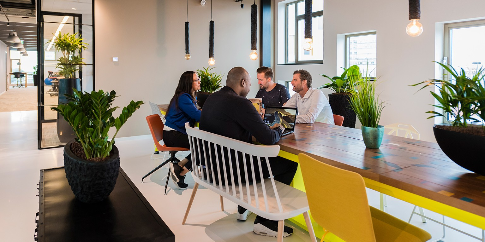
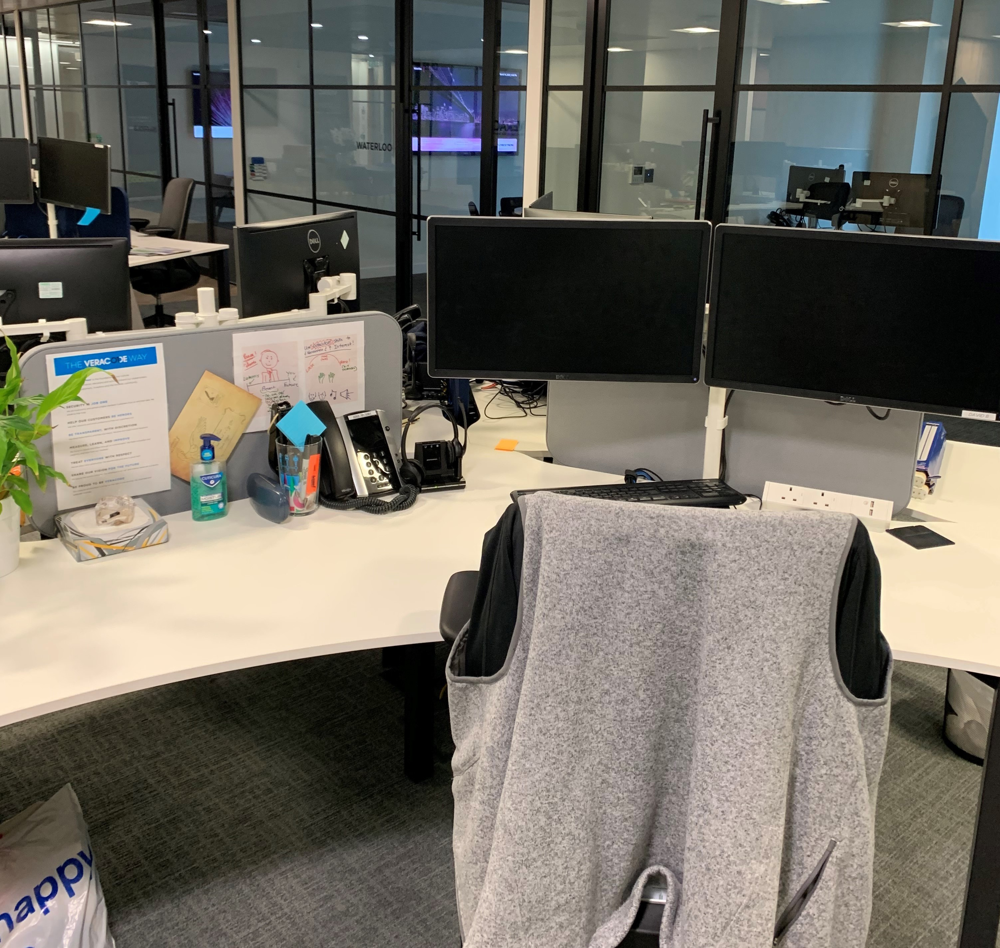
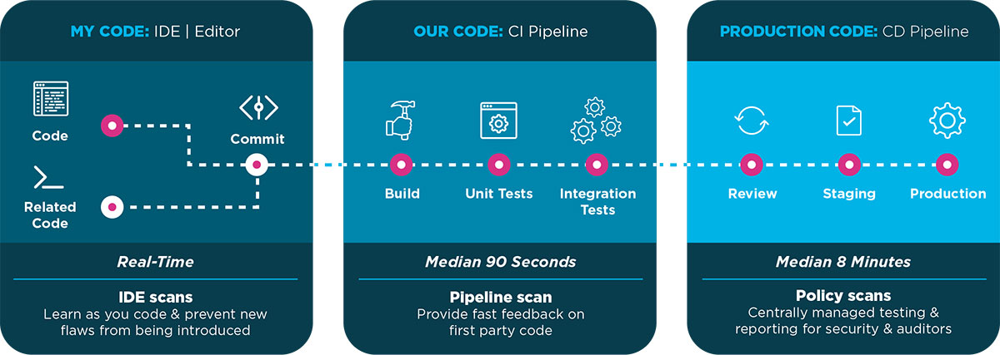
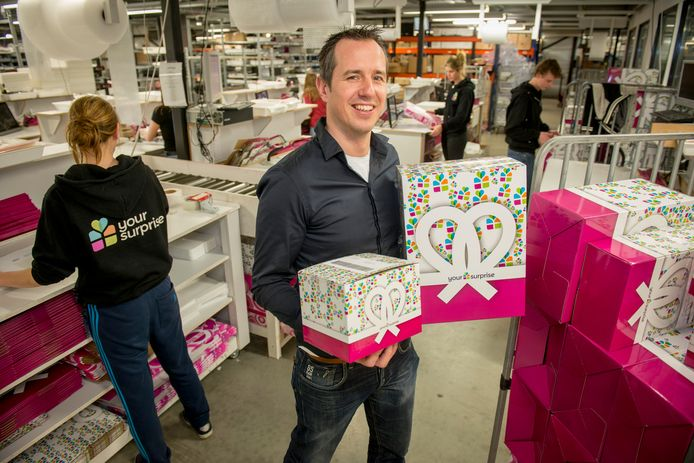
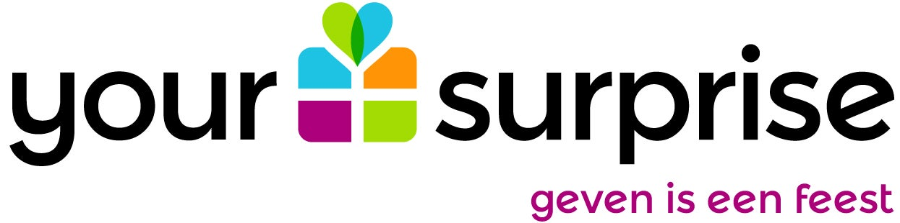

T Mobile
T mobile NL is a part of the magenta-colored multinational company Deutch telecom.
They serve individuals and businesses as well. They have 1450 employees in the Netherlands, which is considered a lot.
Because this sector is changing rapidly, they need to make quick decisions; therefore, they have many positions open to ICT people.
Applying for these jobs is relatively easy since they have an online application interface that allows you to upload your CV and motivation letter.
Several different positions open currently, such as Linux Engineer, a universal job, Cybersecurity specialist, a more skilled job,
or a Webcare specialist, which is somewhere between. Their primary focus, of course, is continuously innovating their GSM network
across the globe.
However, it seems that their customers are not satisfied with their service: on Trustpilot,
they got 1.5 points out of 5, which is an awful score.
They use open-space working environments, a common way of working in offices nowadays when employees have to communicate frequently.
They have several recreation rooms for the employees, for playing games, or having an afternoon nap.
They even can get a massage for a reduced price or drink free coffee. I think T mobile strongly focuses on their employees' wellbeing.
The company also wants to make its working-methods greener; they continuously develop solutions to stay a carbon-free company.
In my opinion, this is a vital thing to do nowadays.
For me, the Cyber Security Specialist position is charming because those people are continually monitoring T mobile assets and providing
support and advice to the business to implement and safeguard security in their products and services.
Additionally, I like the fact that they focus on their employee's wellbeing as well.


Revolut
Revolut is a fintech company which is growing rapidly in the past years. They do not have physical places for the customers,
but they manage everything online via in-app chat. Therefore they can save a lot of money which they spend on improving themselves.
They always have to compete with banks globally, and it seems they can win this race in the long-run.
They explicitly state what their vision about their culture is: „We believe that any success at Revolut comes from two
things: our people and our culture. We believe that brilliant people operating in a great culture will produce the best outcome.
Our culture is our DNA. It defines who we are, how we operate, and how we handle disagreements with each other.
We operate, hire, develop, and promote people based on the values below.”
Their expectations for their future employee are high: ” We don’t settle for players who are just good. We are radically
truthful about each other’s performance. The bar is very high, and we evaluate people accurately, not kindly.
We never compromise on talent. We select, coach, and retain the top talent only and give them all the support to achieve greatness.”
They want to be number 1 in the ring. No exemptions. Not just an okay performance.
They are working in a unique environment to encourage creativity: Revolut applies brand new ideas and the not afraid of
risking things to develop.
They have several universal roles: Android and iOS Software Engineer, Fron- and Back-end engineer.
Furthermore, they have many unique and specialized positions:
Data analyst – Complaints Root Cause Analyst, or FineCrime analyst.
-
The Complaints Root Cause Analyst: Identify, analyze, and resolve complex issues and help implement improvements using SQL,
organize and maintain a central archive of all data, ensuring everything is recorded accurately and quickly accessible,
help automate parts of the process, est and strengthen current quality controls
-
The FineCrime analyst: This role combines financial and ICT knowledge; you have to analyze frauds with ICT.
For me, this is a charming opportunity to expand my knowledge.
In their job description section, the company clearly defines what skills and knowledge you will need to work for them.
It is straightforward and clear.
Furthermore, they extensively let you know what you will work with and what your roles will be.


Macaw
Macaw is 25 years old, Netherlands based company. Their goal is not only to prepare a solution for the customer but to make sure that they
know exactly what the customer wants. Therefore they only think that their project was successful when the customer succeeds in their business.
Their motto is in sync with his: „challenge accepted.”
To achieve this, their team also helps the customer with strategy,
design, adoption, further development, and optimization. This strategy is quite unique in the market currently.
Macaw operates on multiple levels: „We do more than just device, design and implement the technology; we also ensure adoption of our solution.
Over the years, we have developed from a provider of IT services into a full-service digital partner.
This is the only way we can really contribute to your success.”
They are Microsoft-partner as well, which means that they get the updates and the new innovations before they get published on the market.
This gives Macaw a significant advantage.
The company also makes its work-environment pleasant for the employees. They have a people-oriented culture, and they pay attention to the
life-work balance as well. They are creating an environment where everyone feels welcomed, safe, and productive.
There is also space for self-improvement within the company; you can attend to different courses to gain new knowledge.
They have several vacancies, such as Client Manager, Data Engineer, Sitecore Business Consultant, Sitecore Cloud Engineer,
Technical consultant, etc.


Veracode
Veracode is a medium-sized company, having locations all across the globe. Their goal is to improve the security and
mitigate risks in the field of ICT: "Veracoders are dedicated to creating a world where the software fueling our economic growth and solving
some of society's greatest challenges is developed secure from the start.
We have passion and commitment for security."
When you work for Veracode, you become a part of a community of professionals dedicated to solving problems and helping
each other to reach their fullest potential.
The company focuses on passion. They have a multi-cultural society with different ideas and personalities, where everyone is welcomed.
They have similar roles as T mobile and Revolut: System administrator, Automation Engineer, Data Architect, and Software Engineer.
They have many certifications so that the customer can trust them: SOC 2 Type II, Privacy Shield, FedRAMP.
The company has different integrations, such as Java, Azure DevOps, TeamCity, Eclipse, IntelliJ, Visual Studio, Broadcom, etc.


Your Surprise
Your Surprise is a Netherlands-based company, creating different, personalized gifts for individuals and businesses as well.
They exist since 2005.
They try to automatize as many steps as possible in the workflow.
They are not an IT company, but of course, they still need developers.They have some IT roles, such as PHP developer and Javascriptdeveloper.
The company uses AI to predict different things affecting their workflow, such as predicting the estimated number of
costumers in the current year based on the previous year’s patterns.
They are also making software for their printing and labeling machines because they have to produce special surprises.
They are continually looking for developers because „the software is the heart of the company.”
The employees can work in a light-weighted, calm atmosphere if they choose to work with Your Surprise.

